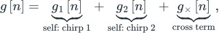

整体概括
问题：全带梯度把陷波推离两个 chirp
论文处理单通道 GNSS 接收机前端的多 chirp 干扰抑制。标准做法是级联多个 NLMS 自适应陷波，每级从上一级残差中跟踪一个干扰；但每级都用全带输入计算梯度，当两个 chirp 功率相近时，两个自项贡献可能相互抵消，交叉项在拍频上零均值振荡，陷波便可能停在两个干扰之间。作者把这一失效归因于梯度平均，并强调它只是局部病态区，不是 NLMS 在所有多干扰条件下的普遍失败。
对照原文证据
With multiple comparable chirps, competing full-band gradient contributions can partially cancel and drive the notch between interferers, resulting in ineffective suppression.In the pathological case of \theta being in the middle of the two chirps’ instantaneous frequencies, g_{1} and g_{2} cancel each other out, and g_{\times} oscillates rapidly at the beat frequency of the two chirps with zero mean.Importantly, this is not a general limitation of the NLMS-ANF across all multi-interferer conditions, but a localized failure regime that occurs when competing gradient contributions become sufficiently balanced.方法：只改梯度输入，4 dB 与 24 s 各有边界
LG-ANF 保留原陷波结构与 NLMS 更新形式，只把梯度输入局部化：围绕当前频率估计混频到基带，经一阶 IIR 低通，再混回原频段。仿真在逐条件优化下、病态幅度比附近最多恢复 4 dB 带内抑制；硬件固定 alpha_lp=0.5，把定位保持从约 150 s 延到约 174 s，延长 24 s。作者把 13 dB 限定为选定参数组合的上界，而非典型部署收益。
对照原文证据
Simulations show that the LG-ANF reduces to the standard NLMS-ANF outside the pathological multi-chirp regime, while recovering up to 4 dB of in-band suppression around pathological amplitude ratios under per-condition optimization of the local bandwidth, and up to 13 dB for selected edge-case parameter combinations.In a hardware experiment using a fixed \alpha_{lp}=0.5 , the LG-ANF extends position-lock survival by 24 s relative to the standard ANF.After the jammer switches on at 100 s, the standard ANF sustains a usable position fix for about 50 s before losing lock at \approx 150 s.The LG-ANF holds the fix for a further 24 s, to \approx 174 s, before degrading, which shows that the additional in-band suppression provides measurable resilience in the position domain under a real chirp jammer.Research gap
已有 ANF 改进很多，但没有处理多 chirp 梯度抵消
作者回顾，约束零极点的最小参数 ANF、格型与高阶结构、零相位滤波以及 GNSS 前端陷波已有长期积累；针对扫频 chirp，也有 FLL 陷波、多参数 ANF 和谱-NLMS 混合方案。但这些工作或改变滤波器实现，或增加参数与稳定性复杂度，未直接解释并最小修正多 chirp 下 NLMS 梯度相互抵消的问题。
对照原文证据
The minimal-parameter ANF with constrained poles and zeros was introduced by Nehorai (1985) and analyzed by Stoica and Nehorai (1988) , with later improvements to the filter structure including lattice-based and high-order structures ( Regalia, 1991 ; Kim et al., 2014 ) , and zero-phase filtering ( Khan and Aguado, 2024b ) . In GNSS, notch filters have been widely used as front-end mitigation tools due to their modest computational cost ( Borio et al., 2006 ) .spectral-NLMS hybrid approaches for improving the resolution-bandwidth trade-off ( Khan and Aguado, 2024a )Gamba and Falletti (2018) studied FLL-based ANFs for tracking swept jammers. While FLLs are effective for single chirps, their discriminators are even worse than NLMS at distinguishing multiple phase components.van der Merwe et al. (2023) proposed MPANF, which adapts multiple notch parameters for improved mitigation and adds a pulse blanker to handle the fast reset of sawtooth chirps. This increases flexibility but also adds parameter and stability complexity缺口：失效被观察过，但缺机制解释与最小修正
作者把缺口写得很窄：级联 ANF 在复杂多干扰场景性能下降已有经验观察，但已有工作只识别问题，没有给出对 NLMS 梯度的最小修正；FLL 在单 chirp 上有效，其鉴别器在多相位分量下反而更差。本文因此不改结构、不改目标，只解释梯度平均并修正梯度输入。
对照原文证据
van der Merwe et al. (2020) showed empirically that cascaded ANFs can degrade in complex multi-interferer scenarios. The work identifies the problem but does not provide a minimal correction to the NLMS gradient.Gamba and Falletti (2018) studied FLL-based ANFs for tracking swept jammers. While FLLs are effective for single chirps, their discriminators are even worse than NLMS at distinguishing multiple phase components.Our paper explains the failure through gradient averaging and proposes such a correction.Instead of changing the notch structure, objective, or NLMS update form, we change the signal used to compute the gradient.算法主线
场景与基线：锯齿 chirp 加级联 NLMS 陷波
PPD 在 GNSS 频段发射锯齿 chirp：瞬时频率在周期 Tc 内从 f0 线性扫到 f1 再复位，多个独立 PPD 或同一设备的多分量会造成多 chirp 并存。基线是一阶复 NLMS-ANF：用标量 theta 表示瞬时频率，输入 x 经 z0 与状态 x_r 形成陷波输出 y；频率按输出功率的梯度下降更新，步长由滑动功率 P 归一化。多干扰时把 K 级串联，每级期望跟踪一个 chirp。
对照原文证据
A single sawtooth chirp sweeps instantaneous frequency linearly from f_{0} to f_{1} over a period T_{c} , then resets, producing wideband, time-varying interference.The first-order complex NLMS-ANF ( Nehorai, 1985 ) suppresses a single chirp by tracking its instantaneous frequency with a single scalar state \theta[n] . Defining z_{0}=e^{j\theta[n]} , the filter operates as:where x[n] is the input, y[n] is the notch-filtered output, x_{r}[n] is the filter state, and k_{a}\in(0,1) controls notch width. The frequency estimate is updated each sample by gradient descent on the output power |y[n]|^{2} :P[n]=\alpha_{P}|x_{r}[n]|^{2}+(1-\alpha_{P})P[n-1] is a running power estimate used for step size normalization.失效分析：固定 theta、灵敏度状态与三项分解
为脱离具体自适应轨迹，作者改看固定 theta 下的批目标 J_N，即 N 个输出功率的平均；此时 theta 会通过完整 IIR 递归传播，必须引入灵敏度状态 s[n]=∂x_r[n]/∂θ。把输入写成两个 chirp 之和后，输出与导数按线性分解，总梯度精确分成两个自项与一个交叉项；在两个 chirp 中间，两个自项相互抵消，交叉项在拍频上零均值，陷波便扫向没有干扰的区域。
对照原文证据
To derive the gradient independently of any particular adaptation trajectory, we analyze the batch objective J_{N}(\theta)=\frac{1}{N}\sum_{n=0}^{N-1}|y_{\theta}[n]|^{2} rather than the stochastic objective defined above.Unlike the stochastic gradient in Equ. 3 , which treats x_{r}[n-1] as a constant past state, the gradient of J_{N} must account for how \theta propagates through the full infinite impulse response (IIR) chain. Defining \dot{z}_{0}=jz_{0} as the derivative of z_{0} with respect to \theta , and s[n]\triangleq\partial x_{r}[n]/\partial\theta as the sensitivity state with s[-1]=0The gradient of J_{N} therefore splits exactly to three parts:This makes the notch sweep a region occupied by neither jammer, suppressing useful GNSS signal while leaving both interferers intact.LG 修正：局部混频、低通、再混回，数据路径不变
LG-ANF 用当前 theta 把输入搬到基带，经一阶 IIR 低通保留 theta 附近与 alpha_lp 成比例的带宽，再搬回原频段，得到 x_loc；另设一套与主滤波器同形式的递归，产生 x_r,loc 与 y_loc。梯度与功率归一化都改用局部信号，因此竞争 chirp 在更新形成前被压低，滤波器会吸附到最近的 chirp。陷波数据路径仍用全带 x；每级新增低通、两次复混频和 alpha_lp，取最大值时退回标准 NLMS。
对照原文证据
The local signal x_{\text{loc}}[n] is obtained by translating the input to baseband relative to the current estimate \theta[n] , applying a first-order IIR low-pass filter, and translating back:A separate filter driven by x_{\text{loc}} yields x_{r,loc}[n] and y_{\text{loc}}[n] via recursions analogous to Equ. 1 – 2 . Both the gradient and the power normalization use the local signalSince x_{\text{loc}} retains only spectral content within a bandwidth proportional to \alpha_{lp} around \theta[n] , the “competing” chirp is attenuated before gradient computation, and the filter “snaps” to the nearest chirp since the gradient is dominated by the self-term of the chirp nearest the current estimate. While this drives the frequency estimation of the given ANF stage, the data path of the interference mitigation method, i.e., Equ. 1 – 2 , still operates on the full input x[n] , not the local version.using just one additional parameter (i.e., the low-pass bandwidth, which collapses the LG-ANF to the NLMS-ANF formulation at its maximum value of 1.0 )关键公式
归一化更新：步长、功率与遗忘因子
这条归一化更新式把下一时刻的频率估计写成当前估计减去步长乘以梯度，步长是 mu 除以滑动功率 P 加小常数 epsilon。梯度是输出功率对相位的敏感度，P 是功率量纲，因此 mu 无量纲；epsilon 防止静默时除零。P 由 alpha_P 做指数平均，alpha_P 越大遗忘越快、步长越抖。作者在扫描中把 alpha_P 推到上限只为隔离幅度比，并明确说这种设置在实际中不可行。
对照原文证据
P[n]=\alpha_{P}|x_{r}[n]|^{2}+(1-\alpha_{P})P[n-1] is a running power estimate used for step size normalization.Figure 4 uses \alpha_{P}=1 (a controlled choice to isolate the amplitude-ratio dependence), k_{a}=0.8 , and \mu=1 , and at each amplitude ratio the best \alpha_{lp} (LG) and loop bandwidth (FLL) are selected.At \alpha_{P}=1.0 the running power P[n] tracks only the latest sample, so the normalized step size is very noisy and this setting is infeasible in practice.全带随机梯度：只对当前输出求导
这条全带随机梯度把梯度写成 2 乘 y* 与 (ka-1) j z0 x_r[n-1] 的实部。它来自对输出功率 |y|^2 关于 theta 的直接求导，但把滤波器状态 x_r[n-1] 冻结为常数；因此它忽略 theta 变化对 IIR 历史的影响，计算便宜、适合逐样本更新，却不是批目标的精确梯度。ka 越接近 1，陷波越窄，(ka-1) 的幅度权重越小；实现时需用同一时刻的 y 与状态，避免先更新 theta 再算梯度造成偏置。
对照原文证据
is the stochastic gradient, i.e., the exact gradient of |y[n]|^{2} w.r.t. \theta treating x_{r}[n-1] as stationaryDefining z_{0}=e^{j\theta[n]} , the filter operates as:where x[n] is the input, y[n] is the notch-filtered output, x_{r}[n] is the filter state, and k_{a}\in(0,1) controls notch width.三项分解：两个自项与一个拍频交叉项
三项分解把总梯度写成 g1+g2+g×：g1、g2 分别是两个 chirp 单独存在时的自项，g× 是两个输出与对方导数交叉相乘的项。分解成立的前提是固定 theta 下滤波器对输入线性，因此 y=y1+y2、导数也相加；它描述的是批目标梯度，不是标准随机梯度。两个 chirp 幅度接近且 theta 落在中间时，g1 与 g2 相互抵消，g× 在拍频上快速振荡、均值为零，总梯度失去方向。
对照原文证据
when x[n]=x_{1}[n]+x_{2}[n] , the filter is linear in x at fixed \theta , so y=y_{1}+y_{2} and \partial y/\partial\theta=\partial y_{1}/\partial\theta+\partial y_{2}/\partial\theta .Note that this is a generalization of the stochastic gradient in Equ. 3 as it can be recovered by freezing s[n-1]=0 in Equ. 5with g_{k}[n]=2\,\text{Re}\{y_{k}^{*}[n]\cdot\partial y_{k}/\partial\theta[n]\} and g_{\times}[n]=2\,\text{Re}\!\left\{y_{1}^{*}[n]\,\partial y_{2}/\partial\theta[n]+y_{2}^{*}[n]\,\partial y_{1}/\partial\theta[n]\right\} .In the pathological case of \theta being in the middle of the two chirps’ instantaneous frequencies, g_{1} and g_{2} cancel each other out, and g_{\times} oscillates rapidly at the beat frequency of the two chirps with zero mean.局部梯度：同一形式，换成本地信号
局部梯度与全带随机梯度形式相同，只把 y 与 x_r 换成局部滤波器的 y_loc 与 x_r,loc，并用当前相位旋转作为混频项。它本身不显示混频与低通的递推；原文把这两步写在正文而未提取为独立公式，所以不能把这条式子当成完整实现。量纲仍是功率对弧度，局部低通改变的是梯度输入与功率估计，不改变陷波数据路径；alpha_lp 越小，局部带宽越窄，竞争 chirp 压得越狠，但吸附瞬态与数值条件也更敏感。
对照原文证据
A separate filter driven by x_{\text{loc}} yields x_{r,loc}[n] and y_{\text{loc}}[n] via recursions analogous to Equ. 1 – 2 . Both the gradient and the power normalization use the local signalSince x_{\text{loc}} retains only spectral content within a bandwidth proportional to \alpha_{lp} around \theta[n] , the “competing” chirp is attenuated before gradient computation, and the filter “snaps” to the nearest chirp since the gradient is dominated by the self-term of the chirp nearest the current estimate.While this drives the frequency estimation of the given ANF stage, the data path of the interference mitigation method, i.e., Equ. 1 – 2 , still operates on the full input x[n] , not the local version.归一化频率更新
下一时刻的频率估计等于当前估计减去归一化步长乘梯度。mu 控制步长，P[n] 是输出状态功率的指数平均，epsilon 避免静默时除零。归一化使不同信号功率下的有效步长大致可比。
符号与实现提醒
- theta[n+1]
- 下一时刻的瞬时频率估计，实际实现为相位状态，单位为弧度/样本。
- mu
- 步长系数，无量纲；越大跟踪越快，但稳态抖动也越大。
- P[n]
- 滑动功率估计，量纲为信号功率；由 alpha_P 控制遗忘。
- epsilon
- 防止静默时除零的小常数，与 P 同量纲。
- g[n]
- 输出功率对 theta 的随机梯度，量纲为功率/弧度。
P 的遗忘由 alpha_P 控制；alpha_P=1 时只跟踪最新样本，归一化步长噪声大，作者称实际不可行。公式假设单主频与慢变 theta，不包含多 chirp 分离；多级串联时每级仍有自己的状态与功率估计。
全带随机梯度
对输出功率 |y|^2 关于 theta 求导，并把滤波器状态 x_r[n-1] 视为常数，得到 2 Re{y* (ka-1) j z0 x_r[n-1]}。它计算便宜，是逐样本 NLMS 的实际梯度，但不是完整 IIR 链的精确导数。
符号与实现提醒
- y[n]
- 当前陷波输出，复数基带信号。
- ka
- 陷波宽度系数，取值范围 (0,1)；越接近 1 陷波越窄。
- z0
- exp(j theta)，当前频率估计对应的单位相位旋转。
- x_r[n-1]
- 上一时刻的滤波器状态，求导时被冻结为常数。
冻结状态意味着忽略 theta 对历史状态的影响；在快速 chirp 或强多分量时这一步近似会限制跟踪。实现时必须用更新前的 y 与 x_r，且 ka 越接近 1 陷波越窄、梯度幅度权重越小。
梯度三项分解

固定 theta 时滤波器对输入线性，总梯度精确分成两个 chirp 的自项 g1、g2 与交叉项 g×。自项各自把陷波拉向本 chirp；交叉项来自两个输出与对方导数的乘积，在拍频上振荡。
符号与实现提醒
- g1[n]
- chirp 1 单独存在时的自项梯度，功率/弧度。
- g2[n]
- chirp 2 单独存在时的自项梯度，功率/弧度。
- g×[n]
- 两个 chirp 的输出与对方导数交叉相乘项。
- y_k[n]
- 第 k 个 chirp 单独通过滤波器时的输出。
分解假设 theta 固定、滤波器对输入线性，描述的是批目标 J_N 的梯度，不是标准随机梯度；实际自适应轨迹中 theta 变化会破坏严格分解。两个自项幅度接近且 theta 位于两 chirp 中间时会相互抵消，交叉项零均值，总梯度失去方向。
局部梯度
形式与全带随机梯度相同，但用局部滤波器的 y_loc 与 x_r,loc，并以当前相位旋转 e^{j theta} 混频。它只改变梯度与功率归一化的输入，不改变主陷波数据路径。
符号与实现提醒
- y_loc[n]
- 由局部信号驱动的陷波输出。
- x_r,loc[n-1]
- 局部滤波器的上一时刻状态。
- theta
- 当前频率估计，用作混频相位。
- alpha_lp
- 局部低通带宽系数，越小带宽越窄。
原文没有把混频与一阶低通的递推提取为独立公式，M6 不能当作完整实现；两次复混频与低通的顺序、初始状态和群延迟需按正文与代码核对。alpha_lp=1 时局部信号退化为全带，LG 回到标准 NLMS；alpha_lp 变小会增加吸附瞬态与数值敏感性。
实验怎么做
等幅示例：参数被刻意设置以放大失效
等幅示例用 20 MHz 采样、60 μs 窗、30 dB SNR 的两条 chirp：chirp 1 扫 1–5 MHz、周期 20 μs，chirp 2 扫 2–5 MHz、周期 40 μs。两种方法都用 ka=0.80、mu=0.35；LG 取 alpha_lp=0.125、alpha_P=1.0，标准方法取 alpha_P=0.15。标准 alpha_P 被特意压低以放大失效，因此这不是同参数消融，只能说明机制在该构造下可见。
对照原文证据
The chirps are sampled at F_{s}=20 MHz over a 60 \mu s window with AWGN at 30 dB SNR. Chirp 1 sweeps 1–5 MHz with period T_{c}=20\,\mu s and Chirp 2 sweeps 2–5 MHz with T_{c}=40\,\mu s. Both methods use k_{a}=0.80 and step size \mu=0.35 . The LG-ANF uses \alpha_{lp}=0.125 and \alpha_{P}=1.0 whereas the standard method uses \alpha_{P}=0.15 .Figure 3 shows the results, which are exaggerated in terms of a low \alpha_{P} for the standard method to demonstrate the failure scenario.幅度比扫描：2 MHz、15 ms，逐条件选最优参数
扫描用 2 MHz、15 ms、30 dB SNR；chirp 1 扫 -700 到 +500 kHz，chirp 2 扫 -200 到 +800 kHz，基线 100 MHz/s。比较标准 NLMS、LG、FLL-ANF 与 oracle 上界，抑制量取两 chirp 频带并集上的功率下降。图 4 固定 alpha_P=1、ka=0.8、mu=1，每个幅度比选最优 alpha_lp 与 FLL 带宽；左边缘单 chirp 点供对照。
对照原文证据
two sawtooth chirps are sampled at F_{s}=2 MHz over a 15 ms window with AWGN at 30 dB SNR. Chirp 1 sweeps -700 to +500 kHz and Chirp 2 sweeps -200 to +800 kHz, both at a 100 MHz/s baseline rate.We compare the standard NLMS-ANF, our proposed LG-ANF, an FLL-ANF ( Gamba and Falletti, 2018 ; van der Merwe et al., 2023 ) , and a per-sample oracle that notches each chirp at its true instantaneous frequency (an upper bound for this notch structure).Suppression is measured as in-band power reduction over the union of the bands of the two chirps. Figure 4 uses \alpha_{P}=1 (a controlled choice to isolate the amplitude-ratio dependence), k_{a}=0.8 , and \mu=1 , and at each amplitude ratio the best \alpha_{lp} (LG) and loop bandwidth (FLL) are selected.In addition to the sweep, a single point where amplitude ratio = 0, i.e., when only a single chirp is present, is also shown.参数热图：固定病态幅度比，扫 ka 与 chirp 速度
参数图固定病态幅度比 0.6624、mu=1，在 ka 从 0.6 到 0.95 的七行与 chirp 速度 10^7 到 10^10 Hz/s 的十列上扫描，三块面板分别取 alpha_P=0.1、0.5、1.0。每格标注 LG 相对标准的增益；搜索包含 alpha_lp=1 的退化选项，因此得到的是逐格最优上界，而不是固定部署参数的收益。
对照原文证据
Figure 5 fixes the amplitude ratio at one of the pathological values from the sweep ( 0.6624 ) and maps the LG advantage (LG minus standard, in dB) over notch width k_{a}\in\{0.6,0.7,0.75,0.8,0.85,0.9,0.95\} and chirp speed from 10^{7} to 10^{10} Hz/s, for three power-smoothing settings \alpha_{P}\in\{0.1,0.5,1.0\} at fixed \mu=1 .Because the parameter search includes \alpha_{lp}=1 , which recovers the standard NLMS update, the optimized LG-ANF represents an upper bound on the benefit attainable through local-gradient conditioning, with gains of up to 13 dB for selected parameter combinations.硬件：USRP B200、两个 Pluto、100 s 开干扰、200 s 关
硬件只有一个记录场景：USRP B200 接有源 GPS L1 天线，两个 ADALM Pluto 作为 chirp 干扰源；100 s 前只有 GNSS，100 s 开干扰，200 s 关。IQ 经级联陷波后送入 GNSS-SDR，比较标准 ANF（alpha_lp=1.0）与 LG（alpha_lp=0.5）；硬件中的 alpha_lp=0.5 全程固定。参考位置来自飞行模式 Android 手机，作者报告约 10 cm。
对照原文证据
The hardware consists of an USRP B200 receiver connected to an active GPS L1 patch antenna, and ADALM Pluto SDRs for implementing the two jammers. All experiments are done in a completely isolated space, with the necessary precautions taken to ensure that no nearby service is affected.The recording starts with a clean signal window with only GNSS signals, followed by two chirp jammers switched on at t=100 s and off at t=200 s around the GPS L1 center frequency.We process the recorded IQ with the cascaded notch over the jammer window and feed the cleaned stream to the GNSS-SDR, comparing the standard ANF ( \alpha_{lp}=1.0 ) against the LG-ANF ( \alpha_{lp}=0.5 ).The static reference location was additionally verified against Google Maps imagery and is accurate to approximately 10 cm, which is well below the positioning errors of interest here, so we treat it as ground truth.提升与证据
等幅跟踪：标准在两级摆动，LG 吸附到各自 chirp
图 3 的两级跟踪显示：标准 ANF 在两级都不能稳定锁住任一 chirp，陷波随两个扫频的位置来回摆动；LG 经过短暂吸附后，每级各自跟踪一条 chirp。作者同时声明这不是“级与 chirp 一一对应”的固定分配，图中 LG 仍有周期性下探与短暂跳动。该例是刻意构造的等幅最坏情形，且标准方法的 alpha_P 被压低以放大失效，不能用它估计一般场景的锁定概率。
对照原文证据
Figure 3 shows the results, which are exaggerated in terms of a low \alpha_{P} for the standard method to demonstrate the failure scenario.With the standard ANF, both stages fail to lock onto either chirp depending on the positions of the two sweeps: the notch oscillates between the two interferers’ frequencies, doing nothing useful.The LG-ANF, by contrast, converges to and tracks each chirp independently in both stages (not an exclusive stage-chirp ID match though) after a short “snapping” phase, despite the equal-amplitude worst case.幅度比扫描：两个尖峰，最多 4 dB，远离病态带时重合
扫描结果显示，两条 chirp 幅度接近时两种方法都退化，但退化不是以等幅为中心的一条平滑凹谷，而是集中在特定病态幅度比；在该受控设置中，LG 相对标准最多恢复 4 dB 带内抑制，表现为等幅两侧的两个尖峰。离开病态带后最优 alpha_lp 饱和到 1.0，LG 退回标准更新，两条曲线重合；最优 alpha_lp 只在病态带内收窄到约 0.1。FLL 只在单 chirp 点匹配或超过梯度法，双 chirp 时明显落后。
对照原文证据
In the controlled sweep this appears as two sharp peaks in the LG advantage, i.e., one just below and one just above equal amplitude, where the LG-ANF recovers up to 4 dB of in-band suppression over the standard NLMS-ANF.Away from these points the optimal low-pass coefficient saturates to \alpha_{lp}=1.0 and the LG-ANF collapses to the standard NLMS update, so the two curves coincide.The optimal \alpha_{lp} narrows sharply (to \approx 0.1 ) only across the pathological band.The FLL discriminator is only well posed for the single-chirp case, matching or beating the gradient methods there, but it falls well behind the gradient-based methods (standard NLMS and LG-ANF) when two chirps are present.热图：慢 chirp 增益大，ka 非单调，alpha_P 有代价
这张热图在固定病态幅度比下显示，LG 增益随 chirp 变快而下降：快速扫频在标准梯度被拉走前就穿过陷波驻留时间。ka 的依赖非单调，作者不以全局最大值为代表，而取 ka=0.9 行，因为 ka 还要受 GNSS 群时延与定时偏差约束。alpha_P=1.0 的功率估计只看最新样本，归一化步长噪声大，作者称实际不可行；更现实的 alpha_P=0.1 下 EMA 与局部低通协同，增益最大，选定组合的上界可达 13 dB。
对照原文证据
First, the advantage decreases as the chirps get faster: rapid sweeps cross the notch dwell time before the standard gradient can be driven away from the chirp, so there is less for the local gradient to recover. Second, the dependence on the notch width k_{a} is non-monotonic and inconclusive, although some optima exist within the swept range.Because k_{a} cannot be chosen freely since it is tuned against the GNSS receiver impairments that the ANF itself induces, primarily the modulation-dependent group delay and timing bias of the IIR notch ( Borio and Gioia, 2021 ) , we take the k_{a}=0.9 row as the representative operating point rather than the global maximum.At \alpha_{P}=1.0 the running power P[n] tracks only the latest sample, so the normalized step size is very noisy and this setting is infeasible in practice. The more realistic case applies exponential moving averaging ( \alpha_{P}=0.1 ), and the LG advantage is largest here, because the EMA power estimate and the local-gradient band-limiting work together.Because the parameter search includes \alpha_{lp}=1 , which recovers the standard NLMS update, the optimized LG-ANF represents an upper bound on the benefit attainable through local-gradient conditioning, with gains of up to 13 dB for selected parameter combinations.硬件结果：失锁从约 150 s 推到约 174 s，主要是可用性
硬件中标准 ANF 在干扰开启后约 150 s 失锁，LG 保持到约 174 s，延长 24 s；作者把主要收益写成定位可用性与失锁延迟，而不是所有有效历元的平均水平误差下降。200 s 后两者恢复差异被归因于 GNSS-SDR 冷启动，且滤波器在干扰停止时已完全关闭，不能当作滤波恢复收益。该结果只有一个场景、没有重复外场统计，参考位置约 10 cm 也是作者报告。
对照原文证据
After the jammer switches on at 100 s, the standard ANF sustains a usable position fix for about 50 s before losing lock at \approx 150 s. The LG-ANF holds the fix for a further 24 s, to \approx 174 s, before degrading, which shows that the additional in-band suppression provides measurable resilience in the position domain under a real chirp jammer.Therefore, the primary benefit in this experiment is not a lower average horizontal error during all valid epochs, but improved fix availability and delayed loss of lock under multi-chirp interference.The post-200s recovery performance of the two differ, however that is an artifact of GNSS-SDR cold-start behavior, rather than the ANFs themselves, since the ANFs are turned off completely when the jammers stop, for a controllable test.The static reference location was additionally verified against Google Maps imagery and is accurate to approximately 10 cm, which is well below the positioning errors of interest here, so we treat it as ground truth.原图由 arXiv 加载；若未显示，可打开下方原图链接。
跟着原图读
- 先看两条虚线的周期与复位
绿色虚线在 0.02 ms 与 0.04 ms 处从约 5 MHz 垂直落回 1 MHz，周期 20 μs；橙色虚线只在 0.04 ms 处从约 5 MHz 落回 2 MHz，周期 40 μs。两栏共用这一时间轴，所以同一时刻两条 chirp 的频率间隔会周期性变化，读蓝红线时必须对着虚线看，而不能只看绝对高度。
- 再看标准 ANF 是否落在任一条虚线上
Stage 1 中蓝线在 0.02 ms 后停在约 3.2 MHz，既不是绿线的约 1.2 MHz，也不是橙线的约 4.8 MHz；Stage 2 中蓝线先随橙线上升，0.02 ms 后又被拉到约 1.2 MHz 的绿线附近。它随两条扫频的相对位置改变归属，正对应正文说的陷波在干扰之间摆动。
- 最后看 LG 的吸附与残余抖动
红线在 Stage 1 的 0.02 ms 后吸附到绿线并跟随其上升；Stage 2 一度贴近橙线，但在 0.02 ms 附近有明显跳动。两栏都保留了周期性的向下尖刺和短时跳动。说明 LG 是“吸附到最近 chirp 并继续自适应”，不是一次性精确分频，也不是固定的级-chirp 一一对应。
这是作者为展示失效而构造的双等幅示例，标准方法的 alpha_P 被刻意压低，LG 的 alpha_lp 也固定为 0.125；不能把它当成同参数消融、锁定概率统计或所有多 chirp 场景的保证。图中频率是单次仿真的瞬时估计，不能从曲线读出 4 dB 抑制量或定位收益。

原图由 arXiv 加载；若未显示，可打开下方原图链接。
跟着原图读
- 先认横轴与左边缘参考点
左图横轴是 Chirp 2 相对幅度，对数刻度从约 0.003 到 100；最左侧虚线标着 single chirp (one stage)，它是幅度比为零的单 chirp 参考点，画在对数轴的最小端，不能当成横轴上的真实零点。读两个尖峰位置要按对数刻度估，不要按线性等距读。
- 再看左图谁在什么区间塌陷
在幅度比接近 1 的窄带内，标准与 LG 都明显下凹，标准在两处跌到 15 dB 以下（图轴下限），LG 约 18 dB；FLL 在中间一段大范围低于 15 dB，但在最左单 chirp 点高于两种梯度法。Oracle 维持在约 30 dB，说明这是该陷波结构已知真值频率时的上界，不是可实现接收机。
- 最后看右上尖峰与右下 alpha_lp
右上在约 0.66 与略高于 1 处出现两个窄峰，峰值接近 5 dB 刻度；正文把逐条件最优的恢复量写作 up to 4 dB。右下最优 alpha_lp 在大部分幅度比接近 1，只在同一病态带内降到 0.2 以下（正文概括为约 0.1），说明局部低通只在窄区间被选中。
两个尖峰是逐条件优化 alpha_lp 后的局部增益，不是平均提升，也不是固定部署参数的性能；峰值高度还受参数网格影响，不能从图精确读出正文的 4 dB 上界。左边缘单 chirp 点不能当作双 chirp 扫描的零点，Oracle 也不能当作可实现的接收机。

原图由 arXiv 加载；若未显示，可打开下方原图链接。
跟着原图读
- 先建立行列坐标
每块面板的行是固定 ka、列是固定 chirp 速度，速度从左到右增大；三块面板共享 dB 色标。读某一格时应同时报出 alpha_P、ka、速度三个条件，不能把不同面板的同一位置当成同一实验。
- 再看增益往哪集中
最大格集中在最左两列（10 与 30 MHz/s）：alpha_P=0.5、ka=0.7 处标 +13.9 dB，alpha_P=0.1、ka=0.8 处标 +12.4 dB，alpha_P=1 的最大格为 +8.2 dB。到 300 MHz/s 至 1 GHz/s 一带，多数格已降到 0 dB 附近。
- 最后看 ka 的非单调与 alpha_P 的代价
在 alpha_P=0.1 面板固定 10 MHz/s，ka=0.95 为 +0.9、0.9 为 +4.7、0.85 为 +8.9、0.8 为 +12.4，而 0.75 降到 +3.5 dB；所以最高格不能直接当作推荐工作点，ka 还受群时延与定时偏差约束。alpha_P=1 面板整体增益更低，且正文说这种功率跟踪在实际中不可行。
13 dB 量级只对应固定病态幅度比 0.6624、mu=1 下的选定参数格，不是通常部署收益，也不是平均增益；热图不含定位误差、C/N0 或伪距指标。不能从色标推断未标注条件的性能，也不能把 alpha_P=1 的高格当作可实现配置。
局限与追问
4 dB 与 13 dB 是逐条件上界，不是典型收益
论文反复说明 4 dB 与 13 dB 都是优化后的上界：4 dB 来自幅度比扫描中逐条件选最优 alpha_lp 的尖峰，13 dB 来自选定 ka 与 chirp 速度组合；二者都不是固定部署参数下的平均收益。作者也承认相对 NLMS 的提升有限，实际选择参数时只能拿到低于上界的值。因此读这篇论文应把 LG 看作病态区的补丁，而不是全面替代标准 ANF 的新基线。
对照原文证据
Third, the improvement LG-ANF brings over NLMS-ANF is limited (up to 4 dB under practical choice of parameters), motivating further studies on the topic.Because the parameter search includes \alpha_{lp}=1 , which recovers the standard NLMS update, the optimized LG-ANF represents an upper bound on the benefit attainable through local-gradient conditioning, with gains of up to 13 dB for selected parameter combinations.The largest gains therefore identify conditions in which the standard gradient is particularly vulnerable, rather than representing expected gains under nominal operating conditions.证据范围：一个隔离场景与受控扫描
现有证据来自一个隔离环境中的硬件场景与受控参数扫描，作者把更宽幅度比、chirp 速率、频率间隔与 SNR 的系统基准，以及 C/N0、伪距、载波相位影响列为后续工作；这说明定位链上的观测质量仍未被系统评估。数据集发布声明覆盖原始 IQ、元数据、硬件日志与参考日志，但不等同于作者代码已公开或本站已复现。
对照原文证据
The hardware consists of an USRP B200 receiver connected to an active GPS L1 patch antenna, and ADALM Pluto SDRs for implementing the two jammers. All experiments are done in a completely isolated space, with the necessary precautions taken to ensure that no nearby service is affected.First, the downstream impact of the LG-ANF on GNSS signal observables, including carrier-to-noise density ( C\!/\!N_{0} ), pseudorange error, and carrier-phase tracking, warrants a dedicated study beyond the position-domain results reported here.Second, a systematic benchmark of the LG-ANF against the standard cascaded ANF and related methods such as the multi-parameter ANF ( van der Merwe et al., 2023 ) and FLL-based ANFs ( Gamba and Falletti, 2018 ) , spanning a wider range of amplitude ratios, chirp rates, frequency separations, and SNR conditions, would more fully cover the operating region in which the local-gradient correction is beneficial.To support reproducibility and further research, we release the dataset used in this evaluation, including the raw IQ recordings, the jammer and run metadata and hardware logs, and the verified reference logs, in a public GitHub repository ( Soner and Ott, 2026 ) .激活准则还只是方向，部署前要补哪些检验
作者把轻量激活准则列为未来工作：只在检测到病态多 chirp 时切到 LG，其他时候保留标准更新。若要落地，应先定义可观测的触发量，例如双峰间隔、幅度比估计或梯度一致性，再测切换阈值、误激活率与滞回；否则单干扰和异幅场景可能被无故降带宽。还应报告 alpha_lp 切换后的吸附瞬态、最差分层增益与每级额外乘加成本，而不是只报病态区的峰值。
对照原文证据
Finally, since the LG-ANF only departs from the standard update across the pathological band, a lightweight activation criterion for transparent switching between standard and LG modes would preserve single-interferer and dissimilar-amplitude performance while engaging the local gradient only when needed连接你的研究
把 LG 放进 GNSS 观测链：功率、观测与定位分开测
在同一段 IQ 上对照：标准 ANF（alpha_lp=1.0）为基线，LG 跑固定 alpha_lp=0.5 与逐条件最优两档，覆盖单/双 chirp 与病态幅度比；处理后统计预相关带内抑制、C/N0、伪距、载波相位与周跳。再把净化流送入 PPP/RTK，按幅度比、chirp 速度、高度角与 C/N0 分层报告固定率、首次固定时间与重收敛时间。关键是把“功率抑制”和“定位改善”分开，避免用仿真 dB 替代定位误差。
激活策略要可检验：先保单干扰，再谈病态区增益
第二步把激活准则做成可检验模块：用短时谱或多 chirp 证据估计当前是否处于病态幅度比，只有满足条件才把 alpha_lp 从 1 降到 0.5，并加入滞回避免频繁切换。在公开记录与自采数据上比较始终 LG、始终标准、理想 oracle 切换与所提准则，报告单干扰退化、误激活率、切换次数、最差分层增益与每级额外乘加成本。若准则在异幅或单 chirp 下不能保持标准性能，就不应部署。
来源与边界
原图来自固定版本的 arXiv 官方图源，作者及图注已保留；外部嵌入不自动授予转载权。本站不镜像作者图片、PDF 或全文，另行转载须核对许可。外部原图受读者网络条件影响；图后解说由 AI 生成，仍需回原文核验。本篇为 arXiv 非独占分发许可（https://arxiv.org/licenses/nonexclusive-distrib/1.0/），不是 CC BY；本站仅外链官方图源作逐图评述，不镜像作者图片、PDF 或全文，另行转载须确认权利人许可。
对照原始英文摘要
收录历史：2026-10-20
原文许可：查看本版本许可 ↗；外部嵌入不等于任意转载授权。